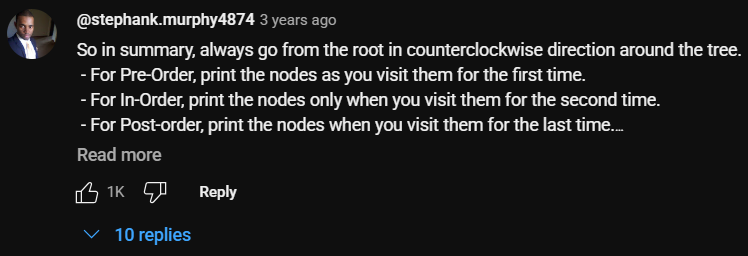
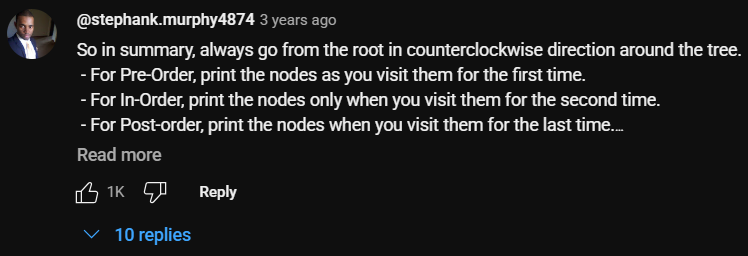

class GTNode:
def __init__(self, data):
self.data = data
self.children = []
class BTNode:
def __init__(self, data):
self.data = data
self.left = None
self.right = NoneTree
Instructor: Jhun Brian M. Andam
Course: Data Structures and Algorithm
Objectives
- Learn how tree data structure works.
- Implement trees in python.
- Explore, understand, and implement different kind of trees in different use cases.
A tree data structure is a hierarchical model used to organize data in a parent-child relationship, resembling an inverted tree. It consists of nodes connected by edges, where the topmost node is called the root, and each node may have zero or more child nodes. Nodes without children are called leaves. Unlike linear data structures such as arrays or linked lists, trees allow for more efficient searching, insertion, and deletion operations in certain cases, especially when dealing with hierarchical data like file systems, organizational structures, or decision processes. Each tree must be connected and acyclic, meaning there is exactly one path between any two nodes. Specialized types of trees include binary trees, where each node has at most two children, and binary search trees, which maintain a specific order among elements to allow fast lookup operations.
Components of a Tree

- Parent Node: The node which is an immediate predecessor of a node is called the parent node of that node.
- Child Node: The node which is the immediate successor of a node is called the child node of that node..
- Root Node: The topmost node of a tree or the node which does not have any parent node is called the root node. A non-empty tree must contain exactly one root node and exactly one path from the root to all other nodes of the tree.
- Leaf Node or External Node: The nodes which do not have any child nodes are called leaf nodes.
- Ancestor of a Node: Any predecessor nodes on the path of the root to that node are called Ancestors of that node.
- Descendant: A node
xis adescendant ofanother nodeyif and only ifyisan ancestorofx. - Sibling: Children of the same parent node are called siblings.
- Level of a node: The count of edges on the path from the root node to that node.
- Internal node: A node with at least one child is called Internal Node.
- Neighbour of a Node: Parent or child nodes of that node are called neighbors of that node.
- Subtree: Any node of the tree along with its descendant.
Common Types of Tree Data Structures
- N-Ary Tree. A general tree where each node can have up to N children (not limited to two as in binary trees). This type of tree is useful for representing hierarchical structures like organizational charts, XML/HTML documents, or category trees.
- Binary Tree. A tree data structure where each node has at most two children, commonly referred to as the left child and right child. It’s the foundation for more advanced tree types but does not enforce any specific ordering of elements.
- Binary Search Trees. A type of binary tree where the left child contains values less than the parent node, and the right child contains values greater than the parent. This structure allows for efficient O(log n) time complexity for search, insertion, and deletion—if the tree remains balanced.
- AVL Tree. A self-balancing binary search tree where the difference in height (balance factor) between the left and right subtrees of any node is no more than one. If the balance factor goes out of this range, rotations are performed to restore balance, ensuring logarithmic time complexity for operations.
Common Operations in Tree ADT
insert(parent, value)– Adds a new node to the tree.delete(value)– Removes a node from the tree.search(value)– Checks if a value exists in the tree.traverse()– Visits all nodes (e.g., pre-order, in-order, post-order).findParent(node)– Returns the parent of a given node.findChildren(node)– Returns the children of a given node.
Implementation
class Node:
def __init__(self, data, node_type='gt'):
self.data = data
self.node_type = node_type
if node_type == 'bt':
self.left = None
self.right = None
elif node_type == 'gt':
self.children = []
else:
raise ValueError("node_type must be either 'general' or 'binary'")
def __repr__(self):
return str(self.data)Node class will be used to create nodes for N-Ary Tree aka general trees and Binary Tree.
class GTree:
def __init__(self, root_data):
self.root = Node(root_data, node_type='gt') # is an instance of class Node
class BTree:
def __init__(self, root_data):
self.root = Node(root_data, node_type='bt')GTree and BTree will be used as the initial to structure for Tree ADT.
N-Ary
A general tree where each node can have up to N children (not limited to two as in binary trees).
Our goal is to make a tree that looks like this.# root node
gtree = GTree('rootsss') # this is already a tree or initial form sa tree
# children nodes
imgs = Node('images') # node instances
msks = Node('masks')
# add the instantaited children nodes to the root node
gtree.root.children.append(imgs)
gtree.root.children.append(msks)
# et voila! that's how we create a tree :>Since tree nodes are not stored in a linear fashion, we need systematic methods to access each node. These methods are called tree traversal techniques, and they define the order in which we visit the nodes. Depending on the application, different traversal orders (like in-order, pre-order, post-order, or level-order) may be more suitable.
Traversal Methods

| Search Type | Approach | Uses Stack/Queue | Order of Visit | Best Use Case | Complexity (Average/Worst) |
|---|---|---|---|---|---|
| DFS (Preorder) | Recursive/Iterative | Stack (explicit or implicit via recursion) | Root → Children (left to right) | General tree search, early exit possible | \(O(n)\) / \(O(n)\) |
| DFS (Inorder) | Binary trees only | Stack (implicit or explicit) | Left → Root → Right | Binary Search Trees for sorted data | \(O(log n)\) / \(O(n)\) |
| DFS (Postorder) | Recursive/Iterative | Stack | Children → Root | Deleting nodes, evaluating expressions | \(O(n)\) / \(O(n)\) |
| BFS (Level-order) | Iterative | Queue | Level by level, left to right | Finding shortest path in unweighted trees | \(O(n)\) / \(O(n)\) |
| Binary Search (BST) | Recursive/Iterative | No extra structure | Depends on key comparisons | Searching in Binary Search Trees | \(O(log n)\) / \(O(n)\) |
 

- preorder
parent -> children(left to right)
def preorder(node):
yield node.data
for child in node.children:
yield from preorder(child)[i for i in preorder(gtree.root)]['rootsss', 'images', 'masks']- postorder
children(left to right) -> parent
def postorder(node):
for child in node.children:
yield from postorder(child)
yield node.data[i for i in postorder(gtree.root)]['images', 'masks', 'rootsss']- levelorder
level by level (left to right)
def levelorder(node):
queue = [node]
while queue:
n = queue.pop(0)
yield n.data
queue.extend(n.children)[i for i in levelorder(gtree.root)]['rootsss', 'images', 'masks']Insert
x_train = Node('x_train') # images
y_train = Node('y_train') # masks
x_test = Node('x_test') # images
y_test = Node('y_test') # masksWe are adding more nodes to the tree structure. Since we already know the specific parent node to which each child should be assigned, traversal is not required in this case.
def insert(parent, node):
parent.children.append(node)gtree.root.children[0].children.append(x_train)
gtree.root.children[0].children.append(x_test)
gtree.root.children[1].children.append(y_train)
gtree.root.children[1].children.append(y_test)# images
# insert(gtree.root.children[0], x_train)
# insert(gtree.root.children[0], x_test)
# # masks
# insert(gtree.root.children[1], y_train)
# insert(gtree.root.children[1], y_test)Display Function
def print_tree(node, level=0):
print(" " * (level * 2) + str(node.data))
for child in node.children:
print_tree(child, level + 1)print_tree(gtree.root)rootsss
images
x_train
x_test
masks
y_train
y_testWe compile the traversal methods in this class, the traversal methods defined here are only applicable for N-Ary trees.
class Traverse:
def __init__(self, node):
self.node = node
def preorder(self):
def _preorder(node):
yield node.data
for child in node.children:
yield from _preorder(child)
return _preorder(self.node)
def postorder(self):
def _postorder(node):
for child in node.children:
yield from _postorder(child)
yield node.data
return _postorder(self.node)
def levelorder(self):
queue = [self.node]
while queue:
n = queue.pop(0)
yield n.data
queue.extend(n.children)tobj = Traverse(gtree.root)[i for i in tobj.postorder()]['x_train', 'x_test', 'images', 'y_train', 'y_test', 'masks', 'rootsss']Think:
- What will be the output if we execute the following codes?
[i for i in tobj.preorder()][i for i in tobj.postorder()][i for i in tobj.levelorder()]
Homework Activity:
In this lab activity, you’ll apply your understanding of tree structures and traversal by implementing some fundamental operations in an N-ary tree:
search(root, data)– Locate a specific node in the tree, returns True if data in tree, else, False.delete(node)– Remove a single node while preserving tree structure.delete_subtree(node)– Remove a node and all of its descendants.find_parent(node)– Identify the parent of a given node (assuming no direct parent reference).
Replicate the figure below, you may use the Traverse class for this. Comment each line of code in conyo or bisaya.
NO comment, NO score
After you implement, answer the following questions.
- What are your realizations after implementing the Tree methods?
- Which operation did you find most challenging to implement, and why?
- In what real-world applications might N-ary trees be used?
- Did using traversal help make your code more organized or efficient? Explain.
- If given a very large tree, which traversal method would you choose for searching and why?
Binary Tree
| Feature | Binary Tree | N-ary Tree (General Tree) |
|---|---|---|
| Number of Children | Maximum of 2 children per node | Up to N children per node (no fixed maximum) |
| Child Pointers | Usually left and right attributes |
Usually a children list |
| Tree Traversals | Inorder, Preorder, Postorder, Level-order | Preorder, Postorder, Level-order |
| Use Cases | Binary Search Tree, Heap, Expression Tree | File systems, Game trees, Organizational charts |
| Simplicity | Easier to implement and reason about | More flexible but requires list-based handling |
| Memory Usage | Fixed pointer structure (left/right) | May use dynamic memory (e.g., lists of children) |
| Common Variants | BST, AVL, Red-Black, Heap | Trie, Quad Tree, B-Tree, etc. |
| Traversal Efficiency | Simpler recursive or iterative methods | Needs generalized recursion or queue handling |
Binary tree shares the same methods with N-Ary tree but teh implementation should be explicit for binary trees.
btree = BTree('alpha')
l = Node('beta', node_type='bt')
r = Node('gamma', node_type='bt')
btree.root.left = l
btree.root.right = r
ll = Node('delta', node_type='bt')
lr = Node('epsilon', node_type='bt')
btree.root.left.left = ll
btree.root.left.right = lrWe modified the print_method() above to accommodate Binary Trees, where children are stored as individual variables (e.g., left and right) rather than as a collection like in N-Ary Trees.
def print_btree(root, level=0, prefix="Root: "):
if root is not None:
print(" " * (level * 4) + prefix + str(root.data))
if root.left is not None or root.right is not None:
if root.left:
print_btree(root.left, level + 1, "L--- ")
if root.right:
print_btree(root.right, level + 1, "R--- ")print_btree(btree.root)Root: alpha
L--- beta
L--- delta
R--- epsilon
R--- gammaInorder traversal is only applicable to binary trees because it relies on the concept of visiting the left child, then the current node, and finally the right child — a structure that only binary trees follow.
def inorder(root):
if root is None:
return
yield from inorder(root.left)
yield root.data
yield from inorder(root.right)[i for i in inorder(btree.root)]['delta', 'beta', 'epsilon', 'alpha', 'gamma']